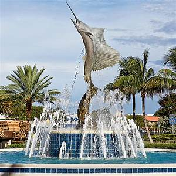
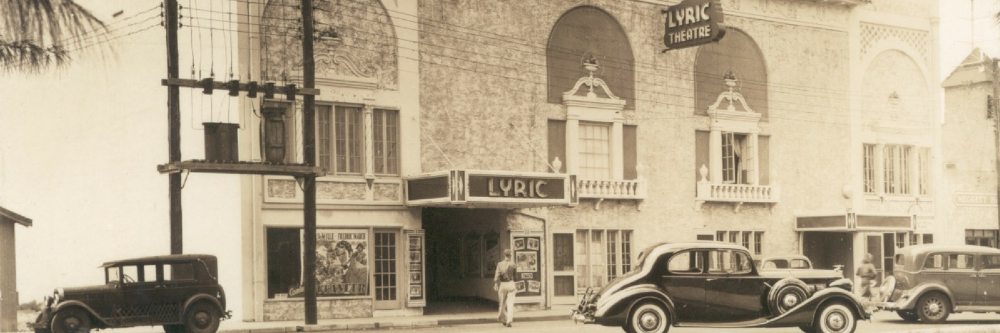
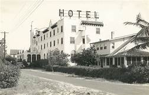

"The Sailfish Capital of the World"
Stuart, the county seat, also known as the “Sailfish Capital of the World” because of the many sailfish found off the coast, is located along the banks of the St. Lucie River. Stuart is also located on the eastern point of the Okeechobee Waterway, which extends from the Atlantic Ocean in Stuart to the Gulf of Mexico in Ft. Myers, giving Stuart the nickname of “The Panama Canal of Florida.”
Stuart was also listed as one of the “Top Ten Beach Towns in Florida” by the Huffington Post. Here you will find working studios and art galleries, antique shops, and museums that add to the small town charm. Residents and visitors alike are invited to experience the local culture at the weekly Green Market, and the weekly Rockin’ RiverWalk Music Series. It takes place in a beautiful outdoor setting along the St. Lucie River.
Adventurers wanting to get back to nature will find an array of outdoor options in the area, including kayaking, hiking, biking and birding options or discovering the pristine and often deserted beach at St. Lucie Inlet Preserve State Park. Also located in Stuart is the new Sailfish Splash Waterpark, a great activity for the whole family. This state-of-the-art complex is open seasonally to the public.
Historical Stuart

The richness of history that cultivates the beginnings of Martin County and the Treasure Coast adds to not only the charm, but also to the stories that can be found here. If you're in downtown Stuart, visit the Stuart Heritage Museum for a glimpse back in time. There you will find the pioneers of Martin County along with how Stuart got its name as The Sailfish Capitol of the World.
Historical landmarks such as the Old Colorado Inn, Lyric Theatre, Mansion at Tuckahoe, and La France populate the downtown district, leaving to the imagination what it was like to have lived here during the 1920s. The Elliot Museum located on Hutchinson Island features local maritime history and vehicles from the past. Showcased at the museum is one of the world's largest collections of historic Ford Model A and Model AA commercial vehicles.
If looking at treasures of the past isn't your thing, but treasure hunting is, then you've come to the right place. There's a reason why they call our coastline the Treasure Coast. In 1715, the Terra Firma Fleet and the New Spain Flota met in Havana, Cuba, to sail together back to Cadiz, Spain. Loaded onto those ships were silver and gold from Mexico, emeralds and gold from Columbia, silks, porcelain, and spices from China, and Peruvian silver.
The ships reached the Bahamas July 24, 1715, well into the hurricane season. The ships were thrown all the way back to our shores by the winds and subsequently pushed into the reefs and beaches along what is now called the Florida Treasure Coast. Some of the vessels crashed along the coast, but five of them were never seen again. Because of the wealth of cargo on the ships, Spaniards and others who heard of the wrecks came to scavenge for the precious items. Not long after news of the wrecks had spread, close to 10,000 people had made the beach their home while hoping to find some of the lost cargo. Today, coins and other fragments of the cargo occasionally wash up on our beaches and are found in the sands and surf following major storms.

Website Pages
Home
A visual and descriptive introduction to the aesthetics and brief background of Stuart, Florida. Sets the web users' up to what to expect and how to feel if they were to come to visit this city of South Florida. Can include interactive features in the nav section such as hover.
Historical Background
Stuart has a rich history and is very cultivated when it comes to the arts. There are a lot of events and historical sites to see and to visit. Includes history of Stuart and images. Show/hide effects.
Restaurants
Visual slider using jquery to display different images of the restaurants. Uses CSS to style the feeling of each restaurant in a classy and attractive way.
Downtown
Includes the festive strip of downtown Stuart including the famous Lyric theatre. Shops and candy stores. Javascript features that play with color and stylistic effects. Jquery plugin of a map for users to search shops in downtown Stuart.
Gallery
Uses a grid to feature any additional images of Stuart. Hopefullly a plugin or library that will have a visual/moving effect on the images.